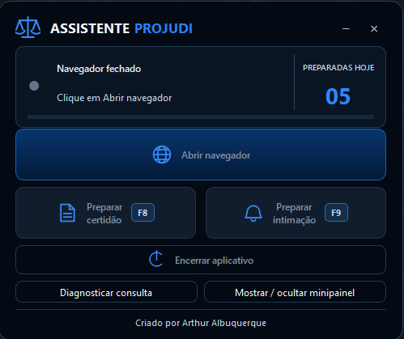

▤
Certidão · F8
Prepara a movimentação, seleciona o modelo e insere o convite com a formatação configurada.
Automação assistida para preparar certidões e intimações no PROJUDI, com conferência inteligente do número do processo, data e horário da audiência. A revisão e a decisão final permanecem humanas.

Redução de tarefas repetitivas, alertas de inconsistência e controle humano antes da conclusão.
Prepara a movimentação, seleciona o modelo e insere o convite com a formatação configurada.
Compara o processo, a data e o horário do convite com os dados oficiais de audiência consultados no PROJUDI.
Prepara a pendência de intimação para ambas as partes e avança até a conferência final, sem salvar.
Em caso de divergência ou conferência incompleta, informa o problema e permite cancelamento ou continuação expressa sem aprovação.
Exibe o andamento e o contador diário sem exigir que a janela principal cubra o navegador.
O aplicativo não aciona automaticamente Salvar ou Assinar. O usuário revisa e decide a conclusão.
Exemplo ilustrativo com informações inteiramente fictícias.
Horário oficial no PROJUDI
15:00Horário informado no convite
16:00O Assistente sinaliza a diferença e exige decisão explícita do usuário.
Horário oficial no PROJUDI
15:00Horário no convite corrigido
15:00Após nova preparação e conferência, o minipainel informa o resultado aprovado.
Se o convite não contiver dados suficientes, o aplicativo não declara uma conferência aprovada. O usuário pode cancelar ou optar por continuar sem conferência, assumindo a revisão manual.
Um fluxo pensado para quem já utiliza o PROJUDI.
Autentique-se com sua própria conta e acesse a página principal do processo.
Copie o convite, entre na movimentação e pressione F8 para preparar a certidão.
O aplicativo utiliza o agendamento oficial para conferir processo, data e horário, alertando sobre inconsistências.
Prepare a intimação e conclua manualmente somente após revisar os dados.
Versão em validação. O download público será disponibilizado após testes de instalação em outros computadores e autorização de distribuição. Nenhum instalador está hospedado neste site.